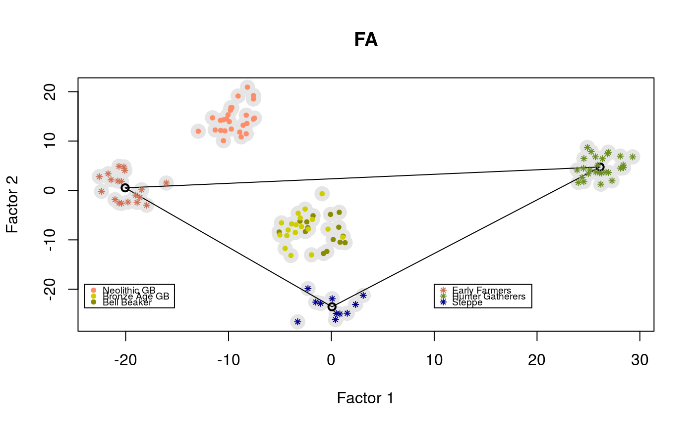

tfa.Rdtfa estimates factors describing population structure for temporal samples
of DNA, correcting individual scores for the effect of allele frequency drift through time
tfa(sample_ages, Y, k = 2, lambda = 0.001, cov_matrix = NULL, center = TRUE, coverage = NULL, log = TRUE)
| sample_ages | a numeric vector corresponding to the age of each sample where age = 0 is for present-day individuals. By default, ages are converted into normalized dates between 0 and 1 (date = 1 for present-day individuals). |
|---|---|
| Y | an nxp numeric matrix containing genetic information for n individuals recorded in p columns. Genetic information could be encoded by any numeric value, not necessarily an integer value. Missing data are not allowed. |
| k | an integer value for the number of factor to compute. The default value is k = 2. |
| lambda | a nonnegative numeric value which corresponds to the drift parameter (noise-to-temporal-signal ratio). |
| cov_matrix | a user-specified prior covariance matrix for the n samples. If |
| center | a logical value indicating whether the genetic values should be centered by substracting their row mean. |
| coverage | a numerical vector containing information on DNA sample coverage. Note that
coverage differences might strongly bias factor analysis results. Including coverage information
allows the program to adjust for coverage bias by using a local regression ( |
| log | a logical value indicating that corrections are performed from |
A list with the following attributes:
an nxk numeric matrix containing the k corrected factors
a vector of size n containing the singular values
a vector containing the normalized sample dates
the C matrix used for correction (default: Brownian covariance matrix)
François, O., Liégeois, S., Demaille, B., Jay, F. (2019). Inference of population genetic structure from temporal samples of DNA. bioRxiv, 801324. https://www.biorxiv.org/content/10.1101/801324v3
library(tfa) # Ancient DNA from Bronze Age Great Britain samples # including Yamnaya, early farmers (Anatolia) and hunter-gatherers (Serbia) data(england_ba) attach(England_BA) coverage <- meta$Coverage geno <- coverage_adjust(genotype, coverage, K = 3, log = TRUE) mod <- tfa(age, geno, k = 2, lambda = 5e-1, center = TRUE, coverage = coverage, log = TRUE) plot(mod$u, pch = 19, cex = 2, col = "grey90", xlab = "Factor 1", ylab = "Factor 2", main = "FA")m_yamnaya <- apply(mod$u[meta$Group.ID == "Russia_Yamnaya",], 2, mean) m_anatolia <- apply(mod$u[meta$Group.ID == "Anatolia_N",], 2, mean) m_hg <- apply(mod$u[meta$Group.ID == "Serbia_HG",], 2, mean) points(rbind(m_yamnaya, m_anatolia, m_hg), lwd = 2)points(mod$u[meta$Group.ID %in% c("England_N", "Scotland_N"),], pch = 19, cex = .6, col = "salmon1")legend(x = 10, y = -15, cex = .6, legend = c("Early Farmers", "Hunter Gatherers", "Steppe"), col = c("salmon3", "olivedrab", "darkblue"), pch = 8)legend(x = 10, y = 20.5, cex = .6, legend = c("Neolithic GB", "Bronze Age GB", "Bell Beaker"), col = c("salmon1", "yellow3", "yellow4"), pch = 19)